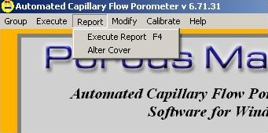
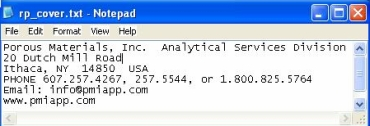

The Report Menu is one of the means of accessing the CAPREP Software System for creating and printing reports.
CAPREP may also be started by pressing F4 or by double-clicking on the CAPREP icon on the Windows® Program Manager screen.
The Execute Report menu option starts the CAPREP Software System which provides the means for printing reports and graphs of the data files. For detailed information CAPREP Software System refer to page 58 of the CapWin manual or launch the CAPREP program and click on the Help button.
The Alter Cover menu is used to change the report heading using your computer's default text editor. Be sure to save the file when you have made your changes. This heading will now appear on all of your reports.
| Back | Next |